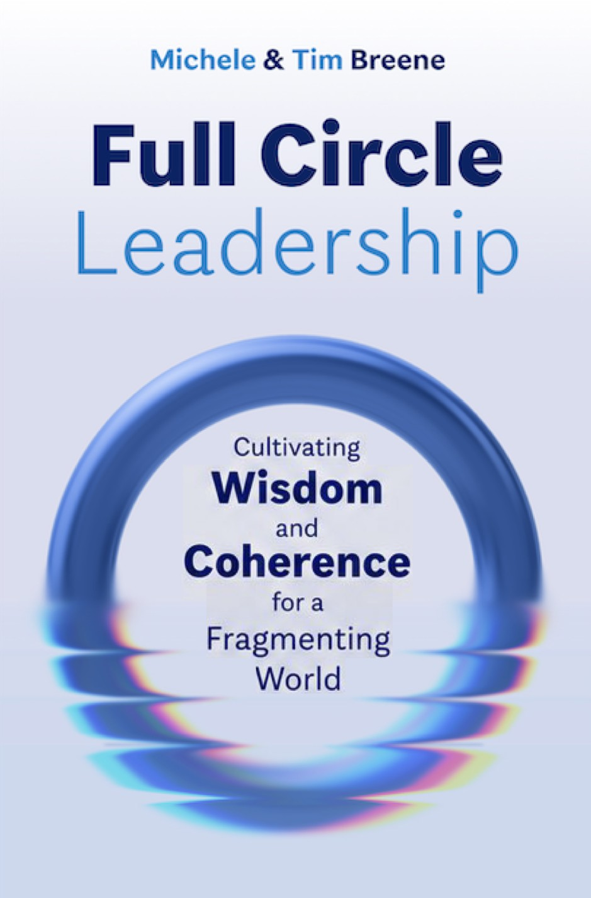

Michèle & Tim Breene
Full Circle Leadership
Cultivating Wisdom and Coherence for a Fragmenting World
- What do Mufasa and Leonardo da Vinci have in common?
- Sartre and St. Francis?
- What can Sisyphus teach us about founder syndrome?
- Lions about leadership?
Most leadership books tell you what to do. Full Circle Leadership begins by asking you to see differently.
The stories engage. The questions provoke. The recommendations are practical.
We are leading in a world of accelerating change, deepening fragmentation and weakening connection. The old model of the heroic individual leader is no longer enough. Leadership today requires the wisdom, connection, and coherence to navigate complexity, unlock the dynamics of teams and sustain mission in a world that can too easily pull us apart.
But this is not a conventional leadership book.
Written as a collection of short, interconnected essays, Full Circle Leadership can be read fifteen minutes at a time. Each begins somewhere different—with a story, a paradox or an unexpected question—and invites the reader to look again.
Drawing on decades of experience across global business, education, humanitarian work and leadership formation, Tim and Michèle Breene explore the chemistry of teams, the architecture of trust, strategy, succession, faith and moral imagination. Their deeper concern is how leaders learn to see more clearly, form judgment and imagine possibilities that old answers obscure.
Read from beginning to end. Spend fifteen minutes with an essay each morning. Return when your team is stuck, your mission blurred or an old answer no longer seems enough.
Full Circle Leadership is an invitation to think more deeply, imagine more boldly and lead more fully.
Endorsements
“Leadership is not a destination. It is a continuous process of learning, adapting, reflecting, and returning to core principles. The image of the full circle captures this beautifully.”
Read more
Over the course of my career, I have had the opportunity to work alongside and study leaders in business, government, education, and the nonprofit sector. I have seen organizations at their very best and at their most challenged. Across those experiences, one lesson has remained remarkably consistent: Leadership is rarely about the individual alone. It is about the system that surrounds the individual and the values that sustain it.
That is why Full Circle Leadership resonates with me.
I have known and worked with Michèle and Tim Breene for decades. They challenge a common assumption in leadership literature: that success is primarily the result of exceptional individuals. Instead, they offer a broader and more useful perspective. They remind us that enduring performance emerges from healthy leadership systems where culture, governance, learning, accountability, and shared purpose reinforce one another.
The most effective leaders I have known recognize that leadership is exercised within a system, not above it. They appreciate that wisdom often matters more than expertise and that stewardship ultimately matters more than personal achievement. As I read these pages, I found myself reflecting on lessons accumulated over decades—some learned through success, others through failure. One truth became increasingly clear: Leadership is not a destination. It is a continuous process of learning, adapting, reflecting, and returning to core principles. The image of the full circle captures this beautifully.
I believe Full Circle Leadership arrives at an important moment. It offers a practical and hopeful vision for leaders who aspire not only to succeed but to serve. It is about leadership in every dimension. Widely applicable and deeply relevant to us as individuals and for the organizations for which we may be responsible.
“Get this book to go full circle—to live and lead on purpose.”
Read more
Full Circle Leadership takes you on a comprehensive, holistic journey to connect self, team and society. The integration of different disciplines and diverse experiences and the mixture of theory, practice, and story set Full Circle Leadership apart from other books about leadership. Get this book to go full circle—to live and lead on purpose.
“Full Circle Leadership is Michèle and Tim planting trees in soil they spent a lifetime enriching.”
Read more
I learned from Tim Breene’s writing long before I wrote a book of my own. His coauthored book Jumping the S-Curve taught us that the jump is never done. If you follow an S-curve far enough, it should bend back on itself into a circle. So being asked to endorse his and Michèle’s new book is a full-circle moment for me. The student ends up writing words for the teacher, which is exactly what this book says about leadership: It is something held for a time and then passed on. The Greeks said a society grows great when elders plant trees whose shade they will never sit in. Full Circle Leadership is Michèle and Tim planting trees in soil they spent a lifetime enriching.
“…Tim and Michèle Breene prove to be the expert guides we need for a journey we did not expect.”
Read more
High-level leadership has never been more demanding, difficult, or complex. The crosswinds are fierce and ever changing and good leaders yearn for clarity and certainty in a world that offers far less of either. In Full Circle Leadership, Tim and Michèle Breene prove to be the expert guides we need for a journey we did not expect. Rather than fine-tuning historic paradigms, Tim and Michèle offer a robust, well-researched, and hopeful way forward. The hard-won wisdom offered will equip boards of directors, senior leaders, and leadership teams to engage with confidence and dexterity.
“Like weekly coffees with a good friend, the book is a welcomed set of reflections…”
Read more
The generous work that Michèle and Tim have given is a beautiful reminder of foundational leadership principles brought forward for today’s missional leader. With their years in many types of organizations and work in many countries, you get the wisdom of those lenses here in this reflective book. Like weekly coffees with a good friend, the book is a welcomed set of reflections that invite you in and spark your own.
“This is not a framework book. It is a formation book. In a world moving faster than most organizations can adapt, that distinction is everything.”
Read more
Leadership writing usually optimizes one variable at a time: individual traits, team dynamics, or organizational strategy. Michèle and Tim Breene refuse that convenience. Full Circle Leadership insists on the whole system then demonstrates, through decades of lived experience and carefully chosen historical examples, why that matters and what to do about it. When results disappoint, it is rarely because the individuals failed. The system failed. The authors name this directly and give you the tools to diagnose it before the crisis arrives, not afterwards. This is not a framework book. It is a formation book. In a world moving faster than most organizations can adapt, that distinction is everything.
“Full Circle Leadership is both intellectually rich and genuinely enjoyable to read…”
Read more
Full Circle Leadership is both intellectually rich and genuinely enjoyable to read, weaving rigorous research, timeless wisdom, and engaging stories into a compelling whole. “Full Circle” is far more than an appealing title; it is the organizing idea that gives coherence to the entire manuscript. Through this memorable lens, Michèle and Tim reveal leadership as a lifelong journey of integration, reflection, and wiser action, offering readers not merely another framework but a durable way of seeing and leading.
“This book is a refreshing reminder that enduring leadership is built on timeless principles…”
Read more
Modern leadership often leaves us standing at a crossroads, tempted by what is new while overlooking what has proven true. This book is a refreshing reminder that enduring leadership is built on timeless principles, faithfully lived rather than merely taught. Tim and Michèle write from the credibility of experience, offering wisdom refined through both success and adversity. Their insights are practical, thoughtful, and deeply grounded. I highly recommend this book to governing boards, presidents, CEOs, and anyone called to lead others.
“Full Circle Leadership draws you in from the moment you start reading…”
Read more
Over the last 20 years, I’ve had the privilege of working closely with Michèle as she has helped our team at the Imago Dei Fund navigate deeply entrenched contradictions in our faith traditions and the opportunities for girls and women to achieve their full, God-given potential. The wisdom, presence and healing she brought to our discussions is on full display in Full Circle Leadership. In the duet of their voices, Michèle and Tim offer beautifully seasoned and insightful perspectives for leaders seeking to find their bearings in these confusing times.
Full Circle Leadership draws you in from the moment you start reading, and every time you put the book down, you feel like you’ve absorbed deeper wisdom to understand the moment we are in. I hope you put this book on the top of your list and enjoy it as much as I have!
“Full Circle Leadership captures what many leadership books still miss…”
Read more
Full Circle Leadership captures what many leadership books still miss: in a world defined by rapid and disruptive change, the architecture of leadership matters more than any individual heroics. The authors show, in an engaging and novel style, how trust, purpose, and collective judgment can become the true sources of resilience. The book provides an insightful, well-reasoned, and genuinely useful tool for those facing an accelerating pace of change.
“At a time when so much leadership literature focuses on technique and tactics, promising shortcuts to success, Full Circle Leadership offers something deeper, slower, and rarer: wisdom.”
Read more
Full Circle Leadership is a rare gift: a work that treats the art and practice of leadership not as a form of domination or mastery to exert but as a way of seeing and being to be cultivated. Authors Tim and Michèle Breene write from the conviction that the health of an institution is inseparable from the health of those leading it, and that such health depends on a recurring cycle of seeing, learning, acting, and renewing. At a time when so much leadership literature focuses on technique and tactics, promising shortcuts to success, Full Circle Leadership offers something deeper, slower, and rarer: wisdom.
“These are enduring truths but told in a fresh and compelling way.”
Read more
I’ve had the honor of knowing Tim and Michèle Breene as friends, mentors, and teachers for more than a decade. Tim preceded me as CEO of World Relief, and during our time together, he imparted much wisdom to me about organizational leadership and the integration of faith amid hard organizational decisions. Michèle was instrumental in shaping my own thinking on gender equality and what it means to lead well alongside others in the workplace.
In a time when leaders are navigating technological change, social fragmentation, and deep polarization, Full Circle Leadership names the need for wiser leadership, understood as a system to be stewarded, where judgment, governance, character, and moral imagination hold institutions together and keep them focused on their core purpose. These are enduring truths but told in a fresh and compelling way. I’m grateful for this book, and I warmly encourage leaders to take time to read it.
“Full Circle Leadership reflects this same posture of humility, wisdom, and shared responsibility.”
Read more
Tim and Michèle Breene understand that enduring leadership is not built through outsiders arriving with predetermined answers but by strengthening the capacity of leaders to develop local solutions to local problems. I witnessed this commitment firsthand when I partnered with them during Kenya’s 2007–2008 post-election crisis. They came not as Western experts but as humble partners—ready to listen, learn, and walk alongside Kenyan leaders and communities. Full Circle Leadership reflects this same posture of humility, wisdom, and shared responsibility. This thoughtful and deeply practical book will help mission-driven leaders build institutions that cultivate local ownership, sustain trust, and produce transformative impact across generations.
“…this book is a call to return to wisdom and coherence.”
Read more
In Full Circle Leadership, Michèle and Tim Breene have captured the very essence of what it takes to lead through the complexity of the modern world. They offer a rare and powerful synthesis that combines Tim’s visionary skills and strategic rigor with Michèle’s profound focus on the inner life and formation of the leader. They remind us that the structures we build are ultimately reflections of our own attention and character. For any leader feeling the “tyranny of the urgent” or struggling with a fragmenting culture, this book is a call to return to wisdom and coherence. It is not just a book to be read or essays to be perused; it is a catalyst for the collective formation of teams best set up to thrive despite rapidly changing markets, competitors, and ecosystems.
“The book offers an insightful roadmap for leaders on these journeys…”
Read more
I had the pleasure of having Tim as a mentor early in my career, when he influenced my thinking on strategy and leadership. The ideas Michèle and he develop in Full Circle Leadership are closely aligned with what we are trying to do at Pearson, which is to help people realize the life they imagine through learning. In doing so, we are shaping a system that connects communities, inspires curiosity, and credibly delivers attainment outcomes for people in education and at work. The book offers an insightful roadmap for leaders on these journeys, framed with personal stories and essays that engage the heart and mind.
“Together they’ve written something unusual: a leadership book with no “new formula that will fix it all”—just short essays, sharp stories, and deep questions…”
Read more
Working with Tim and Michèle over the course of more than a decade changed how I lead more than any book, degree, or job title ever did. Michèle has a rare gift: she doesn’t hand you an answer; she hands you a better question—and then sits with you while you find your way to it. That gift is all over these pages. Michèle understands that people need to be seen first. That instinct—presence before solutions—is what most leadership advice misses entirely. Likewise, Tim is one of the sharpest minds in a generation and integrates his impressive experiences into this book flawlessly. Together they’ve written something unusual: a leadership book with no “new formula that will fix it all”—just short essays, sharp stories, and deep questions that integrate “best of” principles and keep working on you after you close the book. Read it fifteen minutes at a time. Then read it again when your team is stuck.
“This book is a hopeful and practical invitation to cultivate wisdom, stewardship, and human connection.”
Read more
Michèle and Tim Breene have written an engaging and remarkably perceptive work. They chronicle a number of telling trends that, taken together, convey a compelling story about the urgent need for thriving institutions and for leaders who understand how to work within them. Full Circle Leadership resists the temptation to reduce leadership to individual charisma and instead focuses on leadership systems. This book is a hopeful and practical invitation to cultivate wisdom, stewardship, and human connection. All kinds of leaders will find this book both deeply thought-provoking and immediately useful.
“Full Circle Leadership is not just another innovative book on leadership.”
Read more
Full Circle Leadership is not just another innovative book on leadership. It recognizes that the nature of leadership itself is evolving in unprecedented ways, which in turn requires leaders to develop critical new skills and capacities to rise to the unique challenges of today. Synthesizing a remarkably wide range of leadership breakthroughs and insights over recent decades, this brilliant book pinpoints with succinct precision their specific applications and relevance for today’s most effective leaders and organizations. The authors, a dynamic married professional couple, provide detailed guidance for taking account of everything from organizational development and strategy to AI and spiritual wisdom—all richly illuminated with practical examples and compelling vignettes that bring the principles and teachings alive. They conclude that “The most effective leaders learn to hold the whole,” and this book is an authentic guide showing how to do exactly that. Highly recommended.
“Full Circle Leadership isn’t theory to me. It’s the approach I watched Tim live…”
Read more
Tim engaged my firm to provide interim enrollment leadership at an institution he was steering through a turnaround, and for a year and a half I worked with him as we changed its trajectory. I saw firsthand what these pages describe: leadership that steadies a system rather than commands it, builds trust before demanding results, and holds a long view when everyone else wants a quick fix. Tim didn’t direct from a distance. He partnered as an equal, brought wisdom to every decision, and led exactly as he and Michèle write here. Full Circle Leadership isn’t theory to me. It’s the approach I watched Tim live, and it will change how you lead too.
“I believe anyone who reads this important book will find themselves fundamentally changed by it.”
Read more
This book is an extraordinary journey. It asks the reader to suspend their ordinary beliefs and their desire to fix things in favor of following their instincts and endeavoring to understand first what is really going on and, in the process, respecting everyone involved and, in so doing, allowing everyone to grow and value one another. It’s very clear that the respect and love the Breenes have for one another fuels and drives this process. I believe anyone who reads this important book will find themselves fundamentally changed by it.